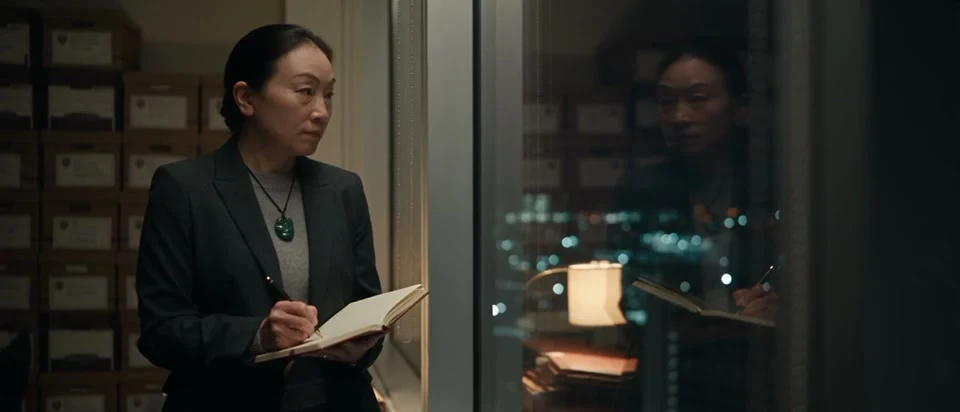
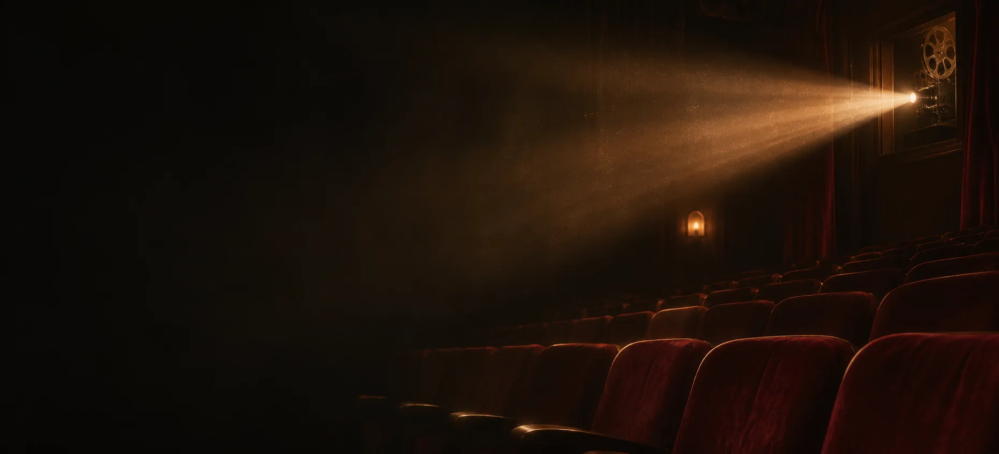
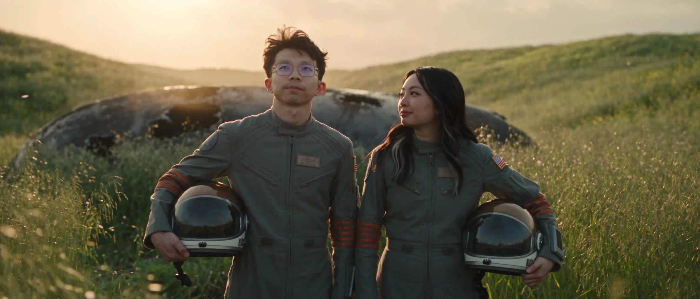
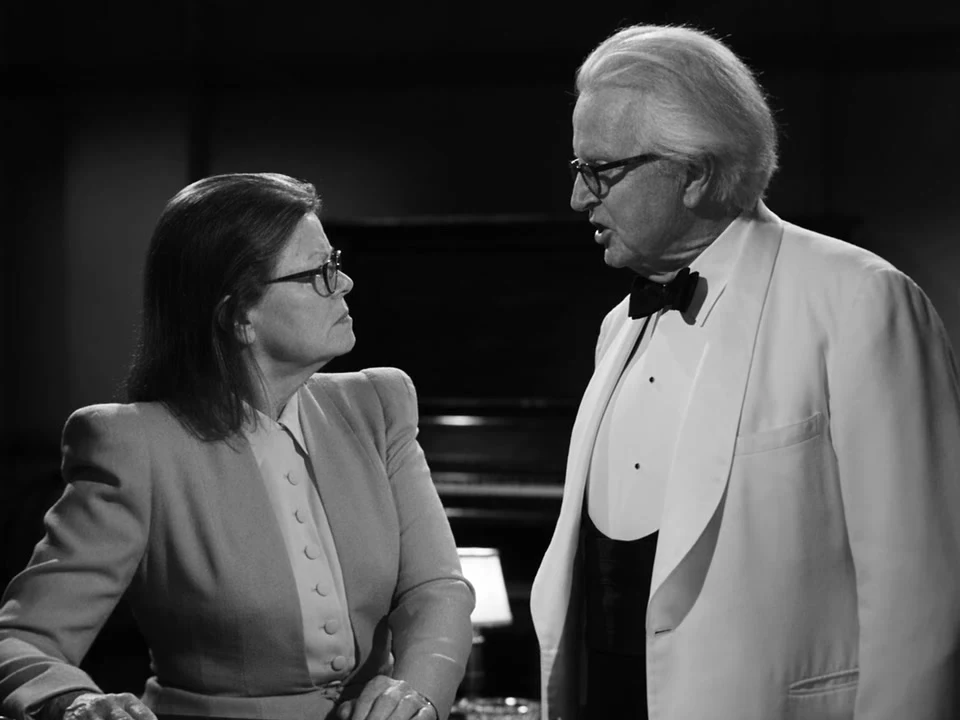
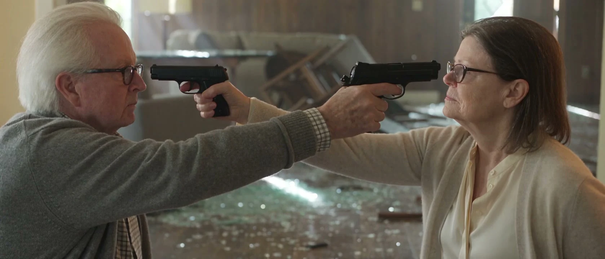
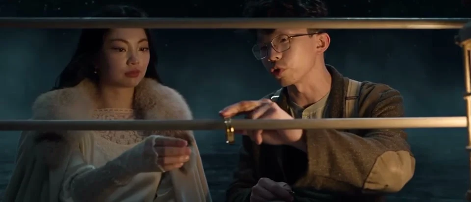

01 / FEATURED FILM03:15 WATCH FILMCONTEMPORARY DRAMA / 2026
Lisa’s Journey
My favorite of the collection.
Watch the film A SHORT FILM BY KE WANG
SELECTED SHORT FILMS
A collection of short films I made.
Thanks for watching.
THE SCREENING ROOM
Five films. About fifteen minutes.

01 / FEATURED FILM03:15 WATCH FILMCONTEMPORARY DRAMA / 2026
My favorite of the collection.
Watch the film A SHORT FILM BY KE WANG
0202:01 WATCH FILMSCIENCE FICTION

0303:48 WATCH FILMROMANCE · BLACK & WHITE

0403:23 WATCH FILMACTION · COMEDY

0502:01 WATCH FILMROMANCE · PERIOD DRAMA
Independent short films made with AI video tools, including homages to the films that inspired them.
A NOTE ON THE PROCESS
I made these films with AI video tools. The code and production notes are open source.
Code & production notes